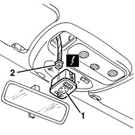

7005R40 rear view mirror-s and door mirror-s positioning switch unit - r r
- Path
- Procedures > 70 FITTINGS > 7005 PASSENGER COMPARTMENT FRONT SIDE DOORS > 7005R front door mirrors > 7005R40 rear view mirror-s and door mirror-s positioning switch unit - r r
- Kind
- repair procedure (removal / refitting; the operation number is the code)
- Applies to
- all engines; all production periods
- Interactive page
- https://sloeber94.github.io/elrnDB-fMltpl/en/#/2892060
Applies to: all engines; all production periods
 Removing
Removing
 Refitting
Refitting1. Remove the switch unit.
2. Disconnect the electrical connection.
 | Name | Connector |
|---|---|---|
2 | Adjustable mirror control |
| Name | Connector |
|---|---|---|
2 | Adjustable / folding mirrors control |

Applies to: all engines; all production periods
Refitting
RemovingCheck that the switch unit is undamaged.
If necessary, conduct an electrical test on the switches.
Connect the electrical connection.
Fit the switch unit.
Check that the door mirrors are working properly.